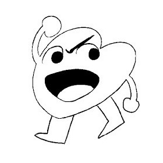

藤本タツキ
人物紹介

プロフィール
日本の男性漫画家。秋田県にかほ市出身。
タツキ節エピソード１
中学生のころから脳内で雑誌を作り、面白くない作品は打ち切り定期的に入れ替えつつ、自ら考案した漫画を約四本同時に連載していた。連載が最終回を迎えたときは、感動で涙が込み上げたが、授業中なのでこらえたという。（ファイアパンチ藤本タツキインタビューより引用）
タツキ節エピソード２
ファイアパンチ連載前から「藤本タツキの妹で小学三年生のながやまこはる」という設定でTwitterに投稿していたが、そのアカウントを発見した担当編集の林士平から、関係者を騙る危険なアカウントを訴えようと思っていると相談をされてしまい、正体が自分であると明かしたことで林をひどく狼狽させてしまったことがある。
作風
妹が登場する作品が多いが、妹キャラに対する嗜好性からではなく人間関係の説明を省くためであるという。（ファイアパンチ藤本タツキインタビューより引用）。ジャンプにおいては型破りな作風が多い。
世間の評価
2021年12月9日、宝島社発行のムック『このマンガがすごい!2022』において、本作がオトコ編1位に選出され、同誌に描き下ろしイラストが掲載された。同ランキングでは前年にも藤本タツキ作品である『チェンソーマン』がオトコ編1位を獲得しており、オトコ編における同一作者の2年連続受賞は今回が初めてとなった。